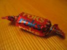
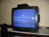
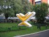
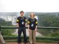
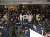
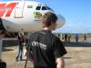
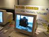

Seni "pamàstymai" yra èia: pamàstymai 2002-2003.
Dabartinis blog'as yra èia.
Bah - pasidariau tikrà blogà ðtai èia: nearaz.blogspot.com. Rankomis ðità html redaguot nepatogu, ir ðiaip; o á serverá koká nors bloginimo softà tingëjau grûst. Pamaniau, bloginsiu angliðkai, tiesiog ðiaip sau (daþnai tas pats uþsiraðo þymiai trumpiau :)).
 Þinia - laikas tarp kalëdø ir naujø metø yra saldainiø laikas. Va koká smagø saldainá ðiandien aptikau: THIS IS TEH ROX. r0x0rz!
Viskas, nebedirbu InteraMotion'e. Uþkniso, ir nebeliko jokios prasmës. Anksèiau mes ten darëm kompiuterinius þaidimus, dirbom su grafika ir t.t. ir t.t., o va prieð pusmetá+ pradëjom daryt big computer networks management software, iki negalëjimo paprastus web projektus ir panaðius dalykus. Ir nepanaðu, kad artimiausius 2 metus kas nors bûtø kitaip (nors teoriðkai vis dar buvom "games and interactive entertainment"). Kadangi tokia "paprasto" softo darymo idëja manæs ypatingai neþavi, tai iðëjau á kità vietà, kur softas irgi "paprastas", bet visos sàlygos geresnës, team'ai didesni (skaityk: kitokia patirtis), projektai sudëtingesni ir management'as (tikiuosi) geresnis.
Taigi, that's it. Að jau ne tik kad praktiðkai, bet net ir teoriðkai þaidimø nebedarau ir su realtime computer graphics neturiu nieko bendro. Ate!
Tyliai tyliai, ir va uþ poros dienø Imagine Cup 2005 jau bus paleistas á platøjá pasaulá. Ten yra du esminiai dalykai - Visual Gaming kategorija, kuriai nekurie neávardinti asmenys darë "3D previewer"; ir, aiðku, Rendering kategorija, kurioje ið esmës reikia daryti 3D grafikos demoðkes.
Taèiau Rendering ðiais metais ðiek tiek pagaidintas - ávesta tema, kurià demoðkës turi atitikt ("dissolving boundaries"); ir tik viena komanda (t.y. pati pirma) gauna kelionæ Japonijon á finalà (praeitais metais gavo pirmos penkios). :-(
Na, bet kà padarysi. Reikës dalyvaut ir kaþkaip bandyt tà pirmà vietà paimt... O visiems kitiems rekomenduoju ir Visual Gaming kategorijà (nekurie þmonës, kurie darë ten kaþkà, joje dalyvaut negali).
Kaþkaip visai netikëtai uþëjo keistas noras sukurti koká nors þaidimà. Net nusipurèiau - brrr, kas èia dabar? Didelio noro kurti þaidimus neturiu jau N metø, man visai patinka trikampius á kairæ ir deðinæ stumdyt... Didele dalimi prie ðio keisto noro prisidëjo keisto þaidimo Normalized paveiksliukai (paèio þaidimo tai að nemaèiau). Graþu, ádomu ir keista. Ir að taip noriu!
Savaime aiðku, að visiðkai nenoriu pult ir daryt DaNextUberFPS. Noriu paprasto þaidimuko, man vienam dviems mënesiams darbo (neuþmirðti padauginti ið 3.1415927). Visiðkai paprasto, bet kaþkuo neáprasto. Aiðku, nieko konkreèiau dar nesugalvojau :)
Þiûrësim. Baigsis turbût tuo, kad bus kokia nors eilinë demo...
Paþiûrëjau naujàjá 3DMark05 - vietomis neblogai (treèias testas gerai, pirmi du - taip sau). Kadangi jau karts nuo karto pagalvoju apie bûsimàjà ImagineCup2005 demo - tai iðaiðkëjo toks veiksmø planas (visada gerai turëti aiðku tikslà prieð akis)...
Sëdþiu paskaitoj. Dëstytojas sako "na, mano kursas niekada neturëjo gero lankomumo...". Po kiek laiko "vat, að jau N metø ðá kursà dëstau, ir jame nieko nekeièiu... viskas bûna taip pat". Bah! Paleist ið bato maþa! Netekæs vilties iðsiimu ið kuptinës Dostojevskio "Idiotà", atsiverèiu ir skaitau. Taip ir esam, idiotëliai - Levas Nikolajevièius ir kiti.
Mane baisiai lengva papirkti. Ðtai, Microsoft nuveþë Brazilijon [1] - ir að jau manau, kad MS yra visuotinis gëris. Ðe, nVidia davë vaizdo plokðtæ (GeForce 6800GT) [2] - ir að jau tikrai nuoðirdþiai manau, kad nVidia plokðtës ruuulez. Kur tau ten kokiai ATi su nVidia lygintis! Jokiu bûdu, ATi valdë tik nuo tada, kai man davë kompiuterá [3], iki tol, kol nVidia davë vaizdo plokðtæ :)))
Ðtai koks að niekingas þmogus.
[1] uþ The Fly
[2] uþ Secret Government Thing pirmtakà
[3] uþ Shaderey
Phew, gana ilgai èia nieko neraðiau!
Kas buvo: demo The Fly pateko á pasauliná Imagine Cup finalà, taigi gavau kelionæ tenais - á Brazilijà (Sao Paulo ir Foz da Iguazu). Tada kaþkokiu bûdu ta pati demo The Fly uþëmë antrà vietà!
Ta proga kaþkiek vaizdø:






Ið eilës: nuosavas Microsoft'o klaidø TV kanalas; Imagine Cup logo; Nesnausk! prie Iguazu kriokliø; finalistø krûva; Nesnausk! ir lëktuvai;
The Fly ir simbolinis èekis :) Taip pat rekomenduoju paþiûrëti Vokietijos "short film" komandos vietoje per 30 valandø sukurptà
filmukà (DivX, 13MB).
Ðiaip viskas buvo Mega-Fun(tm). Kà èia daugiau ir bepridursi :)
Ne á temà: pamatæs Tpolm - Tom Thumb filmukà, uþsimaniau paþaisti su "dissociated press" algoritmu. Trumpai: suðeri jam krûvà teksto, jis susidaro statistiná modelá, kokie þodþiai (ar raidës) kokiom tikimybëm po kokiø eina. Turëdamas tà statistiná modelá, gali generuot krûvas "panaðaus" teksto. Nenaudinga, bet galbût ádomu :) Taigi, paraðiau maþà programà (C++/STL, 150 eiluèiø) ir paþiûrëjau, kas gaunasi.
Ðtai, gabalas teksto, sugeneruoto ið krûvos Joel on Software straipsniø:
The national versions of ADO, ASP, and some of you about the fun features first, not the important features, like standards compliance. Thank you. In better buildings, he may ask for a business can survive for 10 years. People who are not problem solvers and we don't actually have anything like a component, or make it easier to get their act together and discover that these companies all tanked after the comma and never before it. Probably 80% of these pages represent the opinions of one big organized hive of name/value pairs, you have the least information. At a previous job we had our own purposes.
O ðtai tekstas pagal Charles Bloom rants:
It's comparable to a terminal model for dating - don't say anything crass, just be 802.11g wireless, then you can't be sustained. I like monkeys and I was 15, about ten years now; at first I was in Houston one time I cook Italian sausage in wine the only one. So are all responsible and good, but not great, but then you have a Theory of Everything - let's put them together! Um, no. Quantum mechanics is definitely correct; even if no tasks are assigned to them. I like the crane. We enjoy throwing bombs. We like the old-school classy joints that don't go for the server market, so they can bluff me out of the line PC parts in notebook cases; I almost never see people or teams do this.
Useless! :)
Paskutiniai 2 mënesiai buvo labai uþimtas laikas - vienas mënuo suëjo Syntonic Dentiforms demkei, kitas - kitai demkei á ImagineCup konkursà (taip taip, Microsofto organizuojamas, DaEvilOne). Dvi demo per du mënesius - visai neblogas produktyvumas, taèiau taip ilgai nepatempsi. Dabar kuriam laikui riðu su demoscena ir kitais laisvalaikio projektais ("laisvalaikio" reiðkia, kad 4-8 valandos per dienà :)). Kuriam laikui riðu - neþinau; manau, kad bent dviems-trims mënesiams. Pavargau.
Kita vertus, paskutinëmis demo esu tikrai patenkintas (bent jau ðiuo metu). Pavyzdþiui, kai prieð du metus dariau Bzhykt ir Evil!, tai þinojau, kad tai tikrai nëra geros demo; netgi labai toli iki gerø demo. Siaube, tai buvo taip seniai!
Kà dabar veikiu, be visokiø natûraliø darbø - darau demo. Viena jau, galima sakyti, pabaigta - bandysim veþti á Breakpoint'04 Vokietijoje. Kita kà tik pradëta - apie kà ir á kur, nesakysiu (o jei nepadarysim?)...
[2004 04 15 - demo ið Breakpoint'o jau yra èia]
Na ðtai - darbe turim pirmà uþbaigtà þaidimà. Kas tai - nëra labai aiðku; aiðku tik, kad nestebuklas (pvz.: Visionary Interactive - netikëkit, kad tai darë VisionaryInc., jie labiau trukdë, nei kà nors darë :)). Ðiaip ar taip, þaidimas padarytas, ir neuþilgo (2004 balandá) turëtø pasirodyt kartu su vienos pseudo-roko grupës ið Holivudo :) albumu.
Ar að patenkintas ðiuo þaidimu? Ið vienos pusës, taip - laiko buvo gana maþai, dirbanti komanda ypaè maþa, standartiðkai kas mënesá 180 laipsniais pasikeièiantys reikalavimai ir t.t. Netgi stebuklas, kad ið viso kas nors gavosi... Ið kitos pusës - pats þaidimas, ðvelniai tariant, yra tikrai nekoks. Neádomus, negraþus, kvailas, be ryðio, (sàraðà galima bûtø tæsti ilgai).
Anyway, dabar þiûrësim, kà daryti toliau. Að tikiuosi, kad darysim (bent) dar vienà þaidimà, bet ðá kartà jau mûsø paèiø sugalvotà, taigi be jokiø "ið aukðèiau" nuleistø be ryðio scenarijø :) Ir gal ðiek tiek pasimokysim tiek ið ðito Prething'o, tiek ið prieð tai þlugusio FreeFighter... O gal ir ne!
{kind=link}
{kind=link}
{kind=link}
{kind=link}
{kind=link}
{kind=link}
{kind=link}
{kind=link}
{kind=link}
{kind=link}
{kind=link}
{kind=link}
{kind=link}
{kind=link}